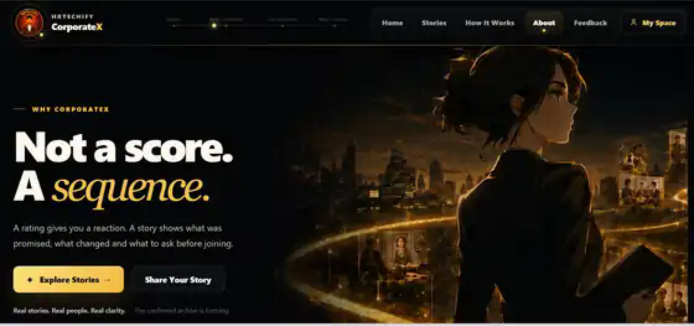

CorporateXWorkplace reality for candidates, employees and ex-employees.
Open product ↗People • Technology • Growth
People, organizations and technology shape one another. HRTechify connects those realities with intelligence and empathy—so growth works for the whole system.
Organizations need both intelligence and empathy to grow.
Organizations succeed when they are smart and empathetic. With intelligence and empathy at the core, HRTechify helps organizations focus on People and Technology for sustainable Growth—creating workplaces that are thoughtful, adaptive, and built for the future.
Explore where to start
You may arrive here as a candidate, employee, manager, HR professional, leader, founder or ex-employee. HRTechify starts with the person behind the title—what you are experiencing, what you need to understand, and the decision in front of you.
Choose the lens that fits your moment
HRTechify connects each moment in the people journey to the product or perspective that can help you understand it better.
For candidates, employees and ex-employees who need clearer context about a workplace, an experience or a transition.
For managers, HR teams and organizations trying to support people while navigating policy, compliance and organizational complexity.
For leaders and founders making decisions about people, organizational design and the future of work.
Product experience
Static homepage snapshots from CorporateX and GrowWithHR. Select either image to open that product.

How we think
Latest Insight
HRTechify Insights develops approved ideas into long-form perspectives. The newest piece stays prominent; earlier pieces will form the archive as the library grows.
A repetitive question, an understandable fear—and perhaps the wrong thing to be asking. The more useful question is how people and organizations evolve as work changes.
Read the full insight →
Anurag Sinha — Founder
HRTechify is founder-built around a simple belief: better workplaces need human context and better systems to work together.
Wherever you are in the journey
HRTechify helps people move from experience to understanding, from understanding to better decisions, and from better decisions to better work.